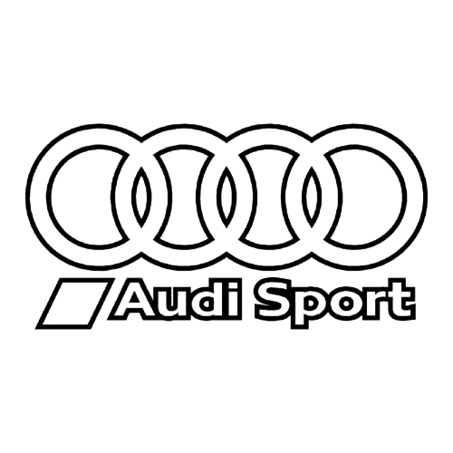
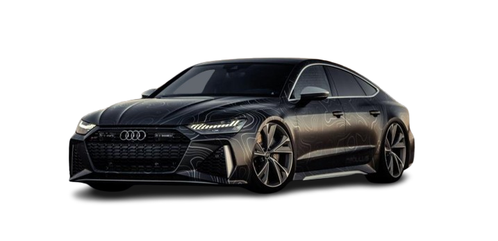

L’Audi RS7 est une berline sportive haut de gamme conçue pour offrir des performances
exceptionnelles et un design agressif.
Équipée d’un moteur V8 biturbo de 4.0 L
développant environ 600 chevaux, elle associe puissance et technologie grâce au système
quattro et à une transmission automatique rapide.
Elle peut accélérer de 0 à 100 km/h en environ 3,6 secondes.